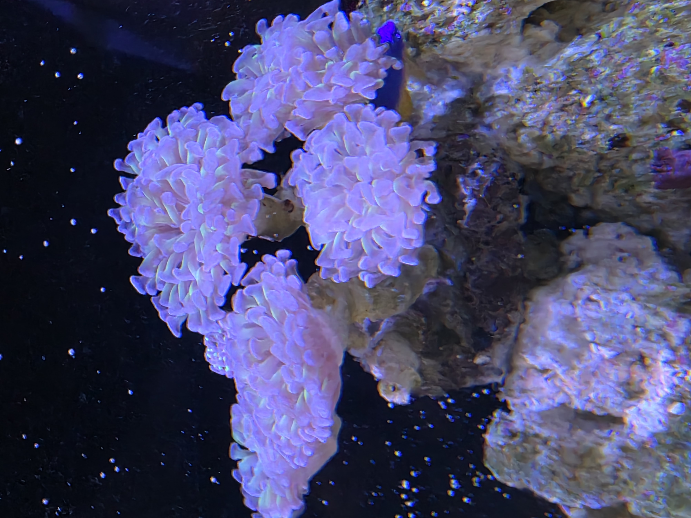

This is my first blog website, or website at all
so please do not judge
ABOUT
Hello!
My name is Tristan
i am 18yo, and i live in Qatar Doha,
if i was to describe myself, i am not the same as other teenagers,
mainly because i am extremely introverted, even my mom always teases me about being introverted
but i personally enjoy being alone, most other people my age always spend time socializing with other people their age,
but i love being in silence and just spending most of my time learning new things, such as plants, corals, freahswater aquatics,
painting, boxing, the list is so big i cannot even remember, but to put it simply, i love spending my time alone learning,
rather than socializing, and today i will be showing you my personal blog posts related to my hobbies.
HOME
Blog 1
reeftanks and corals
9/10/2026

So i have picked up this new hobby like 3 to 4 months ago? i really cannot remember,
the reason why i took in this hobby is mainly because my mom and dad started it, and they both killed a lot of corals
so i started to take over their hobby and actually research it, it is so complicated, i had to learn how water chemistry works,
how certain bacteria in the water converts a state of nutrients to another state, it is so difficult and expensive but i love how difficult it is.
Blog 2
Plants and Gardening
10/17/2026
So these are my plants as of lately,
i have more plants than this, but these are just the ones i will be showing,
anyways the first picture is my adenium obesum and it is starting to flower again,
the second picture is my kangkong that i planted 1 and half a week ago and it grows quite fast here in qatar,
kangkong or water spinach has very pretty, white umbrella shaped flowers but mine is not quite mature yet.,
Blog 3
My 4 adorable cats
10/19/2026
So these are my 4 cats,
the first one is Aria, he is a ragdoll munchkin mix
the second one is Ismail, he is a scottish fold Domestic shorthair mix
the third one is labubu, ewan ko dyan kung anong breed yan pero mukhang pusakal, pero cute parin
The fourth one is Lavinia, she is Ismail's sister and she is supposed to be the same breed as ismail,
but she got the bad genes from her parents.
Anyways i love all my cats very dearly and i spoil them alot, they are so lucky compared to the stray cats sa labas.